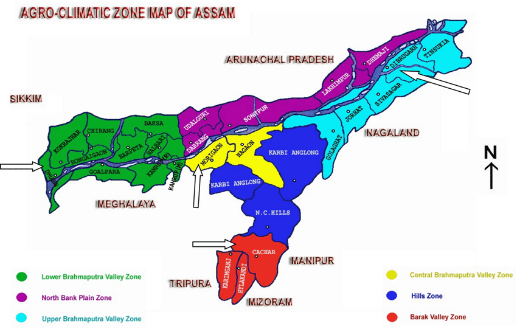

Select The Zones
Zones In Assam
Lower Bramaputra Vally Zone
North Bank Plain Zone
Upper Bramaputra Vally Zone
Central Bramaputra Zone
Hills Zone
Barak Vally Zone

Lower Bramaputra Vally Zone
(1.Dhubari 2.Kokrajhar 3.Chrang 4.Bongalgaon 5.Goalpara 6.Kamrup 7.Nalbari 8.Baksa)
1.North Bank Plain Zone
(1.Udalguri 2.Darrang 3.Sonitpur 4.Lakhimpur 5.Dhemaji)
2.Upper Bramaputra Vally Zone
(1.GolaGhat 2.Sivasagar 3.Charaido 4.Dibrugarh 5.Tinsukia)
3.Central Bramaputra Zone
(1.Marigaon 2.Nagaon)
4.Hills Zone
(1.Karbi Anglong 2.N.C.Hills)
Barak Vally Zone
(1.Cachar 2.Karimganj 3.Hallakandi)